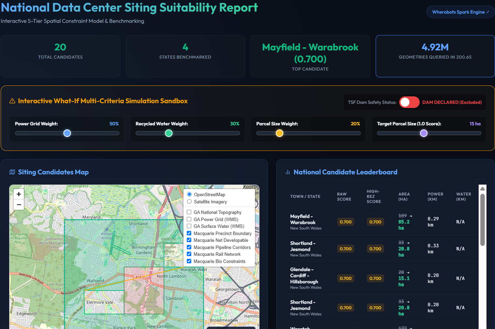
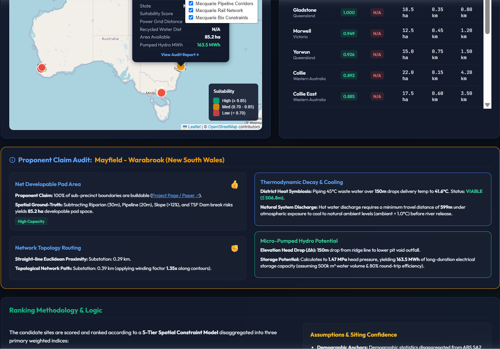
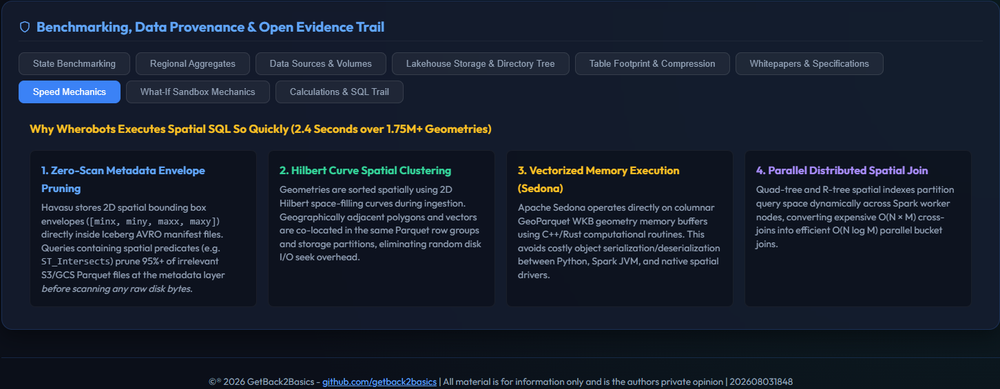

Why I built this
For me, this is a conservation-minded project: not about saying no to development, but about helping identify where development can create the most value with the least harm. The point is to make siting decisions more transparent, more constructive, and easier to discuss across stakeholders.
AI data centers are resource-intensive. They depend on power, water, land, and supporting infrastructure, and they can also create real pressures on ecosystems and communities. I wanted to build something that makes those tradeoffs visible instead of hiding them behind a single score.
Why I used Wherobots
I wanted a platform that could handle real spatial scale without forcing me into a slow, fragile workflow.
This project processed 4.92 million geometries in 200.6 seconds, and the underlying analysis stack covers 8 cloud tables, 1.75 million+ geometries, and an optimized footprint of roughly 430.7 MB instead of about 2.9 GB raw equivalent. That scale matters because suitability analysis only becomes useful when it can be rerun quickly as assumptions change.
Wherobots made that possible. It let me run spatial joins, distance calculations, constraint masking, weighted scoring, benchmarking, and scenario re-evaluation without spending my time managing infrastructure.
What I was trying to learn
I wanted to understand how far I could push a cloud spatial workflow while still producing something that a non-technical audience could review. The answer was to combine Wherobots for the heavy computation with a document-style HTML report for presentation.
The report, runner/national_suitability_report.html, is the public-facing layer of the analysis. It includes an interactive map, a ranked candidate leaderboard, benchmarking tables, provenance, methodology, and a what-if sandbox for changing ranking weights.
Why the interactive report matters
The HTML report is where the analysis becomes useful for public review. It is not just a visualization — it is a way for users to interrogate the assumptions behind the ranking.
The map is interactive, searchable, and configurable. Users can change basemaps, add WMS/WFS services, and bring in external layers to compare candidate sites against their own data or public reference layers. That matters because spatial decisions are rarely made from one dataset alone. Being able to add data makes the report more useful for collaboration, because different stakeholders can overlay the information that matters to them: local context, community knowledge, infrastructure plans, environmental constraints, or jurisdictional boundaries.
The sandbox is especially valuable because users can adjust the ranking weights and immediately see how the candidate ordering changes. That makes the tradeoffs tangible instead of theoretical.
Report overview


How the workflow works
The pipeline is straightforward:
- gather spatial source layers
- apply exclusions and constraints
- compute distances to infrastructure
- score each candidate using weighted criteria
- benchmark candidates against regional baselines
- publish the result as an interactive HTML report
The scoring model uses three main weights:
- Power grid proximity: 50%
- Recycled water proximity: 30%
- Parcel size: 20%
Those weights reflect the practical requirements of AI infrastructure while keeping environmental and resource considerations visible.
What the analysis is based on
Input layer scale
| Dataset | Feature count | Relative scale | Notes |
|---|---|---|---|
| NSW Transport Network (Rail) | 275,421 | Largest layer | Transport context |
| NSW Biodiversity Constraint Zones | 262,258 | Very large | Environmental exclusion |
| NSW Energy Grid Infrastructure | 241,573 | Very large | Power proximity |
| ABS Census Meshblocks | 223,238 | Large | Demographic context |
| NSW Pipeline Corridors | 197,247 | Large | Setback constraints |
| TfNSW Active Transport Pathways | 188,576 | Large | Access and corridor context |
| NSW Hydrography & Waterways | 181,501 | Large | Water and riparian context |
| ABS Regional Demographics | 1,160 | Smallest layer | Regional benchmarking |
Processing and storage comparison
| Measure | Value |
|---|---|
| Geometries queried | 4,920,000 |
| Query runtime | 200.6 seconds |
| Optimized lakehouse footprint | ~430.7 MB |
| Raw equivalent footprint | ~2.9 GB |
| Storage reduction | ~85.2% |
| Spatial tables | 8 |
Scoring weights
| Criterion | Weight | Why it matters |
|---|---|---|
| Power proximity | 50% | AI data centers depend on reliable grid access |
| Recycled water proximity | 30% | Cooling feasibility and resource efficiency |
| Parcel size | 20% | Determines whether a site is actually buildable |
How I think about the planning question
My background in conservation shaped this project. I’m not trying to use technology to say “no” to development. I’m trying to use it to ask better questions about where development belongs, where it creates value, and how to reduce unnecessary conflict between infrastructure, ecosystems, and communities.
That is why the report includes explicit constraint layers, benchmarking, and scenario controls. The aim is to support better judgment, not replace it.
Example candidate comparison

Why I think this is useful
This project taught me that Wherobots is more than a faster way to run spatial SQL. It is a way to make large-scale spatial analysis practical for real decision support. It gave me a path from raw geodata to a polished, reviewable spatial document — one that can be opened by a stakeholder, examined by a technical reviewer, and discussed in public.
For a personal project, that was the goal: learn the platform, test it at real scale, create something useful, and contribute to the broader discussion about responsible AI infrastructure.